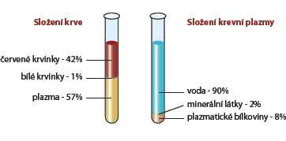

Daruj život
Krevní plazma je součástí krve. Je to její tekutá část, má nažloutlou barvu. Je tvořena zejména vodou, dále organickými a anorganickými látkami.Plazma slouží jako médium pro přenos cukrů, lipidů, hormonů, metabolických produktů, v omezené míře i kyslíku a oxidu uhličitého. (Schopnost plazmy přenášet kyslík je však mnohem nižší než u hemoglobinu obsaženého v červených krvinkách.)
